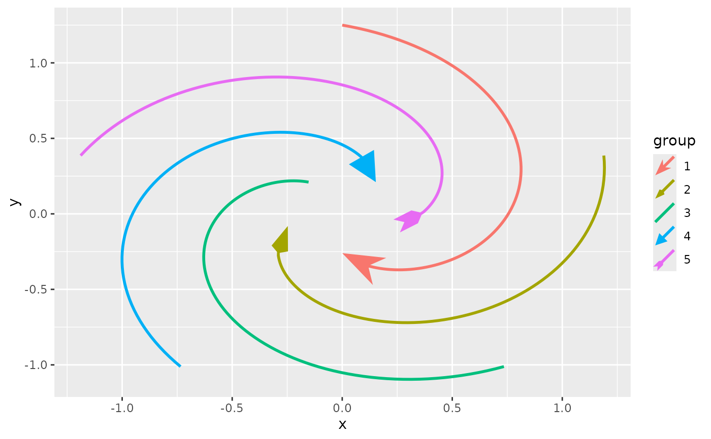
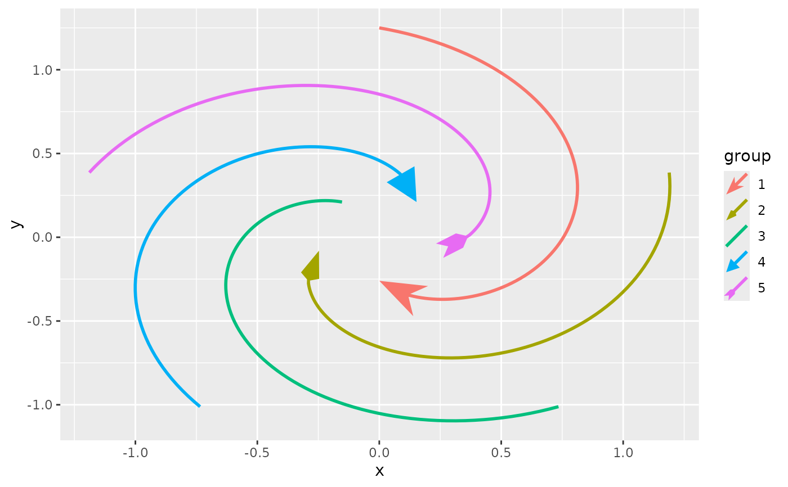

These scales can map discrete input to various sorts of arrow shapes. The arrow head, arrow fins and middle arrows have separate scales.
Usage
scale_arrow_head_discrete(values = NULL, aesthetics = "arrow_head", ...)
scale_arrow_fins_discrete(values = NULL, aesthetics = "arrow_fins", ...)
scale_arrow_mid_discrete(values = NULL, aesthetics = "arrow_mid", ...)Arguments
- values
One of the following:
A
<character>vector of arrow function names, without thearrow_-prefix, such as"head_wings"or"fins_line".An unnested
<list>, possibly mixed<list>, containing any of the following elements:A single
<character>as described above.A
<function>that when called without any arguments produces a 2-column<matrix>that can be used as an arrow.A 2-column
<matrix>giving a polygon to use as an arrow.
NULL, which defaults to a built-in palette with a maximum of 3 arrows.
- aesthetics
The names of the aesthetics that this scale works with
- ...
Arguments passed on to
ggplot2::discrete_scalescale_name![[Deprecated]](figures/lifecycle-deprecated.svg) The name of the scale
that should be used for error messages associated with this scale.
The name of the scale
that should be used for error messages associated with this scale.paletteA palette function that when called with a single integer argument (the number of levels in the scale) returns the values that they should take (e.g.,
scales::pal_hue()).nameThe name of the scale. Used as the axis or legend title. If
waiver(), the default, the name of the scale is taken from the first mapping used for that aesthetic. IfNULL, the legend title will be omitted.breaksOne of:
labelsOne of the options below. Please note that when
labelsis a vector, it is highly recommended to also set thebreaksargument as a vector to protect against unintended mismatches.NULLfor no labelswaiver()for the default labels computed by the transformation objectA character vector giving labels (must be same length as
breaks)An expression vector (must be the same length as breaks). See ?plotmath for details.
A function that takes the breaks as input and returns labels as output. Also accepts rlang lambda function notation.
limitsOne of:
NULLto use the default scale valuesA character vector that defines possible values of the scale and their order
A function that accepts the existing (automatic) values and returns new ones. Also accepts rlang lambda function notation.
expandFor position scales, a vector of range expansion constants used to add some padding around the data to ensure that they are placed some distance away from the axes. Use the convenience function
expansion()to generate the values for theexpandargument. The defaults are to expand the scale by 5% on each side for continuous variables, and by 0.6 units on each side for discrete variables.na.translateUnlike continuous scales, discrete scales can easily show missing values, and do so by default. If you want to remove missing values from a discrete scale, specify
na.translate = FALSE.na.valueIf
na.translate = TRUE, what aesthetic value should the missing values be displayed as? Does not apply to position scales whereNAis always placed at the far right.dropShould unused factor levels be omitted from the scale? The default,
TRUE, uses the levels that appear in the data;FALSEincludes the levels in the factor. Please note that to display every level in a legend, the layer should useshow.legend = TRUE.guideA function used to create a guide or its name. See
guides()for more information.positionFor position scales, The position of the axis.
leftorrightfor y axes,toporbottomfor x axes.callThe
callused to construct the scale for reporting messages.superThe super class to use for the constructed scale
Examples
# A standard arrow plot
p <- ggplot(whirlpool(5), aes(x, y, colour = group)) +
geom_arrow(length_head = 10, length_fins = 10, arrow_head = NULL)
# A character vector naming arrow shapes as arrow head scale
p + aes(arrow_head = group) +
scale_arrow_head_discrete(values = c(
"head_wings", "head_line", "head_minimal", "fins_line", "fins_feather"
))
 # A mixed list with arrows as arrow fins scale
p + aes(arrow_fins = group) +
scale_arrow_fins_discrete(values = list(
"head_wings", # Using a character
arrow_head_wings(20, 100), # Using an arrow function
NULL, # No arrow
matrix(c(1, 0, 0, 0, 0.5, -0.5), ncol = 2), # A matrix
"fins_feather"
))

# A mixed list with arrows as arrow fins scale
p + aes(arrow_fins = group) +
scale_arrow_fins_discrete(values = list(
"head_wings", # Using a character
arrow_head_wings(20, 100), # Using an arrow function
NULL, # No arrow
matrix(c(1, 0, 0, 0, 0.5, -0.5), ncol = 2), # A matrix
"fins_feather"
))
